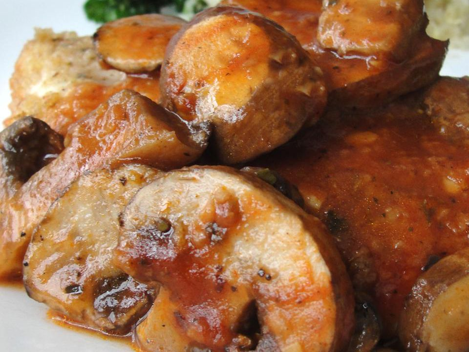

Chicken in a Pot

Description
Use your This dish uses just one skillet to prepare. Quick, easy and delicious. Tomato paste and chicken broth combine to make a tasty sauce. Garnish with fresh parsley.air fryer to make this yummy mini dark chocolate cake topped with brown butter frosting. Brown butter frosting needs to be used immediately after preparation.
Ingredients
- ¾ cup chicken broth
- 1 1/2 tablespoons tomato paste
- 1/4 teaspoon ground black pepper
- 1/2 teaspoon dried oregano
- 1/8 teaspoon salt
- 1 clove garlic, minced
- 4 boneless, skinless chicken breast halves
- 3 tablespoons dry bread crumbs
- 2 teaspoons olive oil
- 2 cups fresh sliced mushrooms
Steps
- In a medium bowl, combine the broth, tomato paste, ground black pepper, oregano, salt and garlic. Mix well and set aside.
- Dredge the chicken in the bread crumbs, coating well.
- Add the reserved broth mixture and the mushrooms to the skillet and bring to a boil.
- Bring broth mixture to a boil and cook for 4 minutes, or until reduced to desired thickness. Spoon sauce over the chicken and serve.